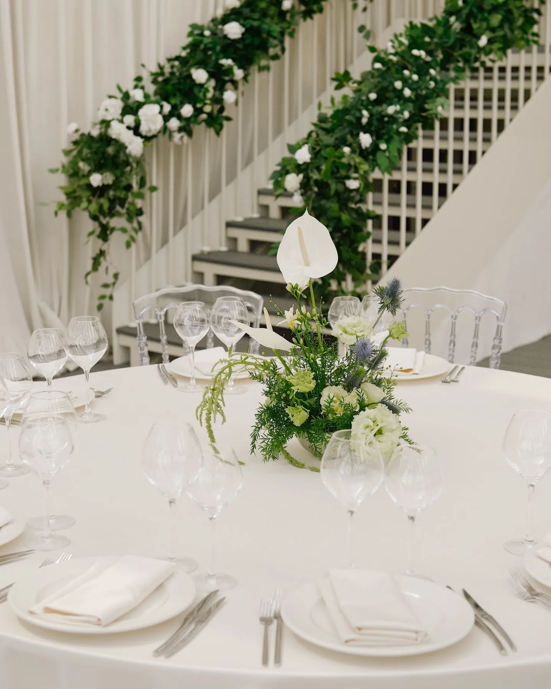

Гирлянда из зелени на стол - самый простой способ сделать длинный стол цельным: одна живая линия от края до края, а в ней свечи и цветы. Её любят за естественность и за то, что она не мешает гостям видеть друг друга. Мы собираем гирлянды из эвкалипта, рускуса и садовой зелени на заказ - для свадеб, банкетов и ужинов в Москве и Подмосковье. Рассказываем, из чего их делают, где они работают и как заказать.
Свадебный декор · смета за 24 часа
Хотите посчитать декор вашей свадьбы?
Расскажите о дате, площадке и числе гостей, пришлите референсы — предложим идею и посчитаем смету по позициям за 24 часа.
Свадебный декор FFP →Из чего делают гирлянду на стол
- Эвкалипт - серо-зелёный, лёгкий, с ароматом; самый частый выбор на свадьбу.
- Рускус и итальянский рускус - глубокий зелёный, держит форму весь вечер.
- Оливковые ветки, садовая зелень и травы - более природный, «садовый» вид.
- Гирлянда с цветами - в зелень вплетают розы, эустому, гипсофилу в палитре свадьбы.
Искусственная зелень подходит, если гирлянда нужна надолго или на несколько событий, но в кадре живая выглядит иначе. Подробнее о материале - в статье про зелень в свадебном декоре.
Где работает гирлянда
- Длинный гостевой стол - низкая линия по центру со свечами в колбах.
- Президиум - по краю стола пары или над задником.
- Лестница и перила - подробнее - в статье про оформление лестницы и входа на свадьбе.
- Арка и вход - тот же материал, что на столах, связывает зоны.
На круглых столах гирлянда работает хуже - там лучше одна композиция по центру; о формах - в статье про декор свадебного стола.
Как это выглядело у нас
На свадьбе Константина и Дарьи (июнь 2026, 40 гостей, стеклянный зал) зелёная гирлянда шла над драпировкой президиума, а лестница зала была увита живой гирляндой с белыми цветами. Отдельной гирлянды на гостевой стол в нашем портфолио пока нет - но материал и приём те же: садовая зелень, белые цветы и свечи.

Гирлянда и свечи
Свечи в гирлянде - только в стеклянных колбах или светодиодные: открытый огонь рядом с сухой зеленью опасен, и многие площадки его не разрешают. Подробнее - в статье про свечи на свадьбу.
Что входит и из чего складывается смета
- Длина гирлянды и число столов.
- Материал: эвкалипт, рускус, садовая зелень, с цветами или без.
- Свечи и колбы, текстиль под гирляндой.
- Доставка, монтаж на площадке и демонтаж.
В сметах наших свадеб 2026 года на 40-60 гостей минимальная сумма декора - 150 000 ₽. Подробнее - в статье про стоимость оформления свадьбы.
Как заказать
Пришлите дату, площадку, длину и число столов и пару референсов - посчитаем смету по позициям за 24 часа. Гирлянду собираем в день события или накануне, чтобы зелень была свежей. Работаем в Москве и Подмосковье. Наши работы - в разделе «Кейсы», свадебный декор - на странице «Свадебный декор».
Частые вопросы
Из чего делают гирлянду из зелени на стол?
Чаще всего из эвкалипта, рускуса, оливковых веток и садовой зелени; можно добавить цветы в палитре свадьбы.
Как долго живая гирлянда держит вид?
Её собирают в день события или накануне, и она спокойно стоит весь вечер.
Можно ли добавить свечи в гирлянду?
Да, в стеклянных колбах или светодиодные - открытый огонь рядом с зеленью небезопасен.
Сколько стоит гирлянда из зелени на стол?
Зависит от длины, материала и цветов. Смету по позициям присылаем за 24 часа.